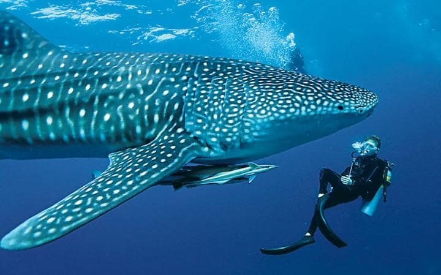
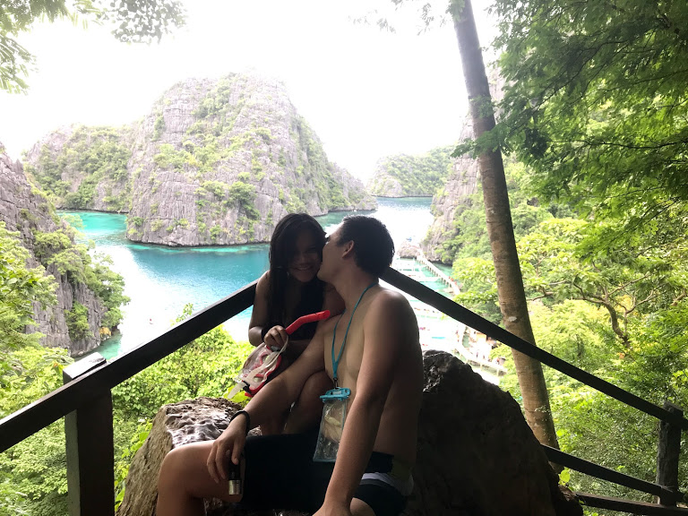
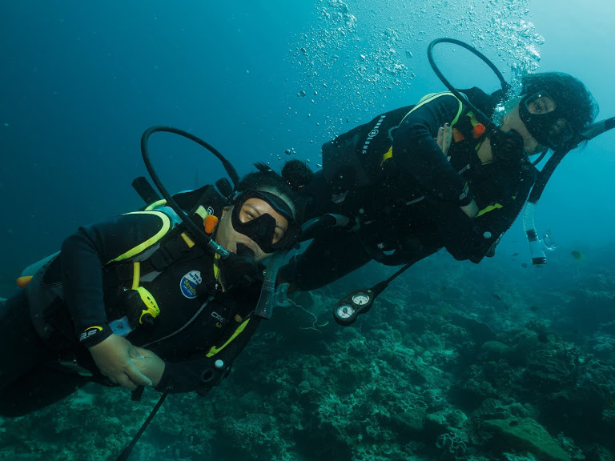

Oslob Cebu
Written by MarySheng on 08/2018
Get fascinated to watch friendly
creatures of the sea as you enjoy watching and swimming
with the friendly whale sharks (tuki) in Oslob Cebu. Whale
sharks can be seen in a small barangay Tan-awan,
which is 10 km away from the center town of Oslob.
It is a tourist magnet and over a hundred thousand tourists
come here every year to swim with the whale sharks. It is
heavily criticized though, for feeding the whale sharks,
and disrupting their natural migration patters and behaviours.

Twin Lagoon
Written by MarySheng on 10/2018
Twin Lagoon is definitely a beautiful place and
one of the highlights of Coron. It's reachable from Coron only
by boat and there are plenty of boats full of tourists.
You'll first pass by the 1st lagoon where the boats docks,
then you have to swim through the cave to go to the 2nd lagoon
during low tide or you have to take the stairs to cross during
high tide. The place is tranquil, very relaxing..
limestone rock formations are very beautiful.

Moalboal
Written by MarySheng on 02/2019
Moalboal has become famous for the thousands
of sardines that swim along the shores and can be seen just below
the surface of the water of Pinagsama Beach.
Diving down and swimming amongst
the giant balls of fish is an awesome experience. Moalboal
is perfect for diving enthusiasts to explore the unspoiled
water. Offshore is a coral wall where divers
all over the world come to visit and see for themselves why
this town in Cebu is hailed as a diving superstar.